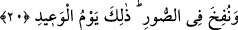
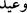
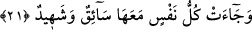

Ölüm karşısında kederin, kışın dökülecek yaprağın kederi kadar bile değil.”
20. Sûr’a üfürülür; işte bu, geleceği vâdedilen gündür.
“Sûr’a üfürülür.” Bu ikinci üfürüştür ki ba’s (yeniden diriliş) üfürüşüdür. Üfüren
kişi İsrafil(a.s.)’dır. Bu konuda bilgi sûr işlenirken geçti. “Bu, bu üfürüş zamanı, vaad
edilen gündür.” Yani dünyada vaad edilen günün uygulanması yerine gelmesidir.
Tehdidin veya vaadin yerine getirildiği gün, vaad edilen azabın uygulanmasıdır.
Kıyamet gününde olacaklardan biri de yapılan tehdidlerin gerçekleşmesidir. Buna
rağmen “
” in o güne özellikle nispet edilmesinin sebebi, insanları bundan korkutmak
ve sakındırmak içindir. Bundan dolayı söze kâfirlerin durumunun açıklanmasıyla
başlanmıştır.
21. Herkes, yanında bir sürücü ve bir de şâhidle beraber gelir.
İyi ve fâcir nefislerden her nefis o gün mahşer yerine gelir.
Şâyet amelen yani kişilerle beraber birisi “onu mahşere sevk eden” diğeri “hayır ve
şer yapıp yapmadığına şehadet eden” iki meleğin olması noktasında sevk ve şehadetin
keyfiyeti husûsunda ihtilaf olursa, bu durum nasıl izah edilir?
Keşfu’l-esrâr’a göre sevk edicisi kâfir kimseyi ateşe sevk eder. Şâhidlik edecek olan
da onun isyankârlığına şehâdet eder. Müminin sevk edicisi ise onu cennete sevk eder ve
şâhidlik edecek olan onun tâatine şehadet eder.
Dünyadaki iki melek, Allah’ın “sevk edici ve şâhid” ifadesinde buyurduğu iki melek
midir, yoksa başkaları mıdır?
Fethu’r-rahman’da da geçtiği gibi bu konuda ihtilaf vardır. Ya da “nefis”le beraber
bu iki sıfatı da kendisinde toplayan bir melek vardır. Sanki nefisle beraber sevk eden ve
lehine veya aleyhine şâhidlik eden bir melek vardır gibi.
Vâsitî, “Sevk edicisi haktır. Şâhitlik edeni de haktır.” Yani dünya ve âhiretteki hakikat
açısından haktır, demiştir.
[235]. Aclûnî, II, 343.
[236]. Buhari, Rikak 38.
[237]. İbnû’l-Cevzî, Zâdu’l-mesîr, Beyrut (I-IX), 1967, VIII, 11.